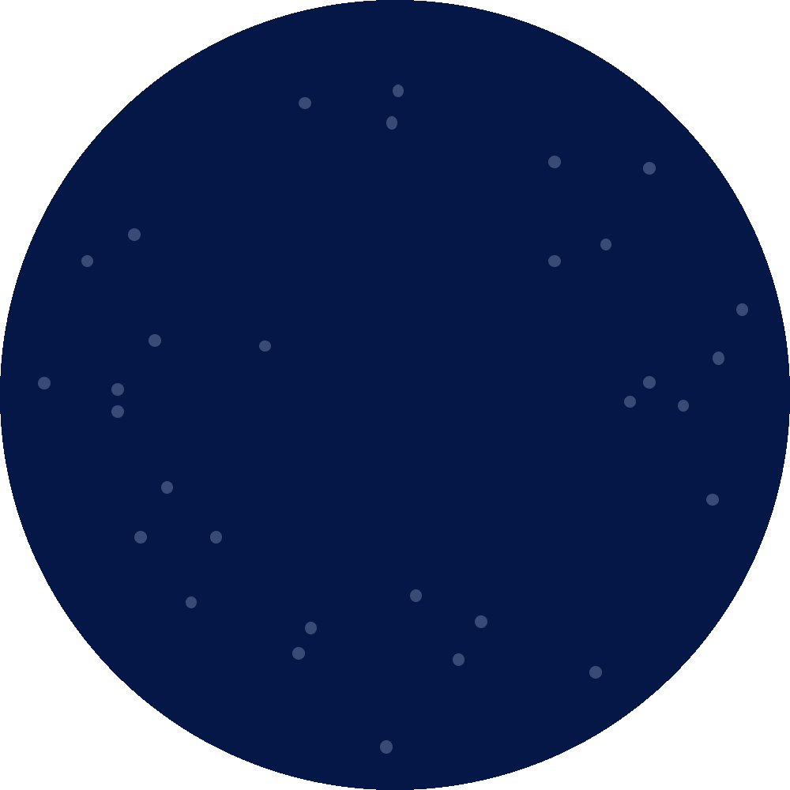

Welcome to COMET!

We have recently updated and fixed several notebooks and other issues on the website.
- If you have an old version of the GitHub project on your Jupyter account, you should delete it and load the new version.
- Links to the website may not be working currently.
(Last Update: 2024-01-03)
About COMET
COMET (Creating Online Materials for Econometric Teaching) is a Large Teaching and Learning Enhancement Fund (TLEF) project started at the University of British Columbia in 2022 that seeks to provide fundamental econometrics learning resources for students and teachers alike.
Based at UBC’s Vancouver School of Economics, our team consists of faculty and students (at all levels) working in partnership to develop hands-on learning modules that explore the real-world applications of economic theory using statistics.
Getting Started with COMET
For Learners
These modules cover topics from beginner to advanced applications of statistical methods in economics. Topics include:
- Descriptive statistics
- Probability
- Estimation
- Hypothesis testing
- Analysis of Variance
- Simple and multiple regression
- Time series analysis
- Simultaneous equation estimation
- Difference in Differences
Modules can be accessed on the left-hand side of this page. They are written as JupyterNotebooks and can be viewed in their .html form via a browser, or by downloading them in .ipynb form and launching them in a JupyterHub. If you are affiliated with UBC, you can do this directly from the website via UBC’s in-house JupyterHub called JupyterOpen for which these modules were designed. PIMS offers a non-UBC specific JupyterHub called Syzygy if you are at another institution or JupyterOpen goes down.
Launching the notebooks in a JupyterHub will allow you to run the code for yourself, complete the exercises and get automatic feedback throughout your learning. Please let us know if you have any problems - you can submit an issue to our GitHub directory if you find something that you think could be improved. Happy learning!
For Educators
These modules, focused on economic questions, models, and data, use the interactive notebook software, JupyterNotebooks to synthesize theoretical learning, practice, and analysis into a single learning experience that is appropriate for either laboratory or flipped classroom instruction.
Our work adapts proven pedagogical strategies to integrate practical learning throughout economics curriculum in order to provide students with the opportunity to improve their technical data skills.
We are driven to champion accessibility in our creation of these modules by publishing an open-source library of educational resources for broad instructional needs with the hope of lowering software costs and hardware requirements for students and learning institutions.
We welcome any feedback on how our project might be more accessible. This can be done by submitting an issue to our GitHub directory.
For more information on integrating COMET resources into your instruction, check out our Using COMET for Teaching page.
Citing COMET
This project is open-source with a mixture of licenses for the data. Our notebooks are all licensed under a Creative Commons Attribution-NonCommercial-ShareAlike 4.0 International License.

CC-BY-SA NC.
This means that in general you can use and adapt this project for your own teaching or learning provided that you:
- Provide attribution (see our suggestion below).
- You only use this material for non-commercial purposes (i.e. you cannot make money off it)
- If you produce derivative materials they must share the CC-BY-SA NC license
Our suggested attribution is:
However, some notebooks have an additional suggested attribution (especially those in GEOG 374). Check the authors on the notebook page!
Further, some of the data used in the project has different attribution requirements. You can find details about the licensing on our copyright page.
Get Involved
COMET is proudly and continually open-source and community driven. We welcome and encourage contributions from students, educators, and the public regardless of what area or field you call home.
Learn how to get involved with COMET!
Some partners from other fields have made substantial contributions to this project. We call these people part of COMET+. These materials are particularly relevant for interdisciplinary students in economics or other fields who need to combine insights from econometrics with other statistical approaches.
COMET+ Partners
- UBC’s Department of Geography: Hewitt Lab - Nina Hewitt, Mike Jerowsky, and Kevin Pierce
- UBC’s Department of Sociology and the Center for Computational Social Science: Laura K. Nelson